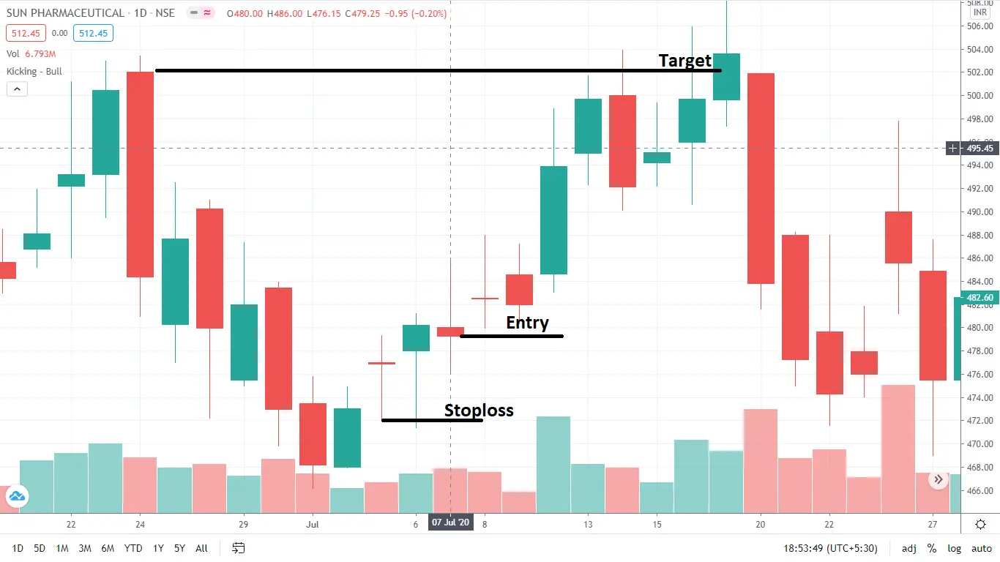
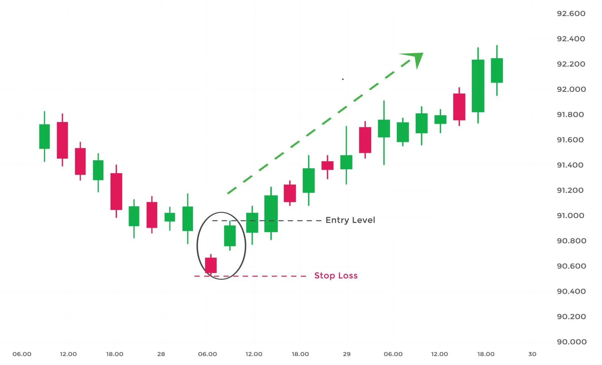

बुलिश किकर एक दो मोमबत्ती का पैटर्न होता है जो आमतौर पर एक महत्वपूर्ण डाउनट्रेंड के बाद बनता है, लेकिन यह एक अपट्रेंड के बाद भी दिख सकता है।

बुलिश किकर एक दो मोमबत्ती का पैटर्न होता है जो आमतौर पर एक महत्वपूर्ण डाउनट्रेंड के बाद बनता है, लेकिन उपट्रेंड के बाद भी दिख सकता है।
बुलिश किकर एक बड़ी बुलिश मोमबत्ती से बना होता है, जिसमें एक ऊपरी दिशा का अंतर होता है और एक बियरिश मोमबत्ती होती है। जब यह ओवरबॉट या ओवरसोल्ड क्षेत्रों में होता है, तो इसका महत्व बढ़ जाता है।
यदि आप एक उपट्रेंड के बाद बुलिश किकर देखते हैं, तो यह संकेत हो सकता है कि बाजार में अभी भी पर्याप्त ताकत है जो उपट्रेंड जारी रखने में सक्षम है।
| How to Identify a Bullish Kicker Candlestick Pattern? |
एक बुलिश किकर कैंडल रुझान के बावजूद उत्पन्न हो सकती है और यह एक मजबूत बुलिश सिग्नल है। यहां आप एक बुलिश किकर को कैसे पहचान सकते हैं:
| How to trade a Bullish Kicker Candlestick Pattern? |
जब ट्रेडर किसी विशिष्ट स्टॉक चार्ट पर बुलिश किकर पैटर्न पहचानता है, तो उस ट्रेडर को बुलिश किकर पैटर्न उत्पन्न होने के बाद अगली मोमबत्ती में ट्रेड में शामिल होना चाहिए। स्टॉप लॉस पिछली मोमबत्ती के निम्नतम स्तर पर रखा जाना चाहिए।

